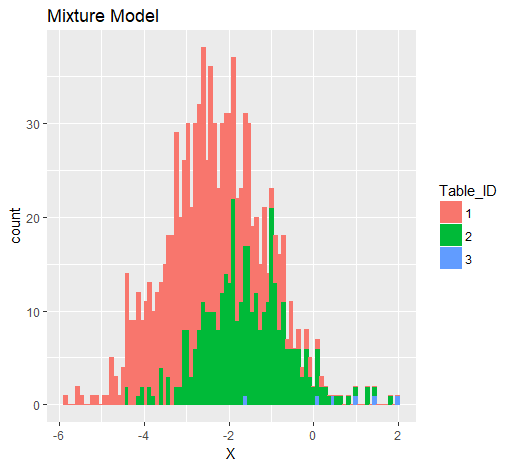
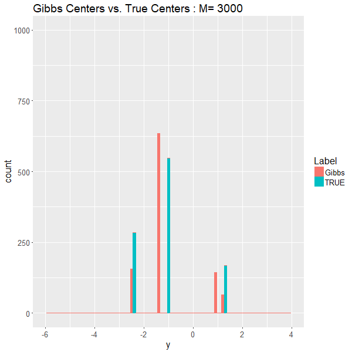
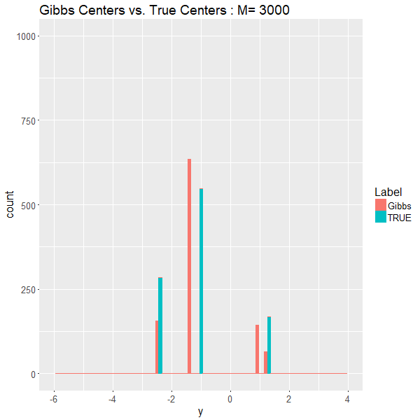
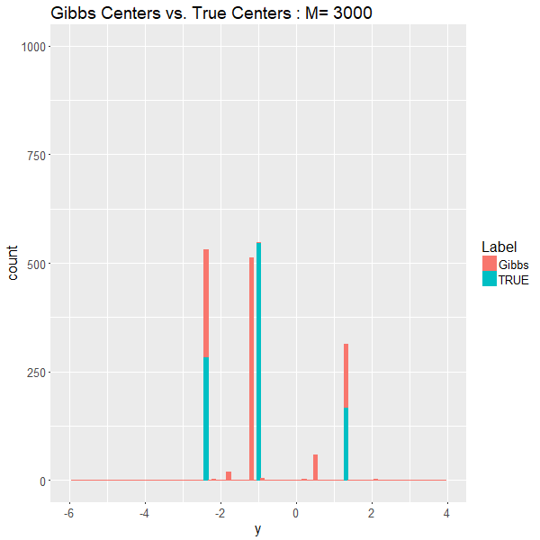
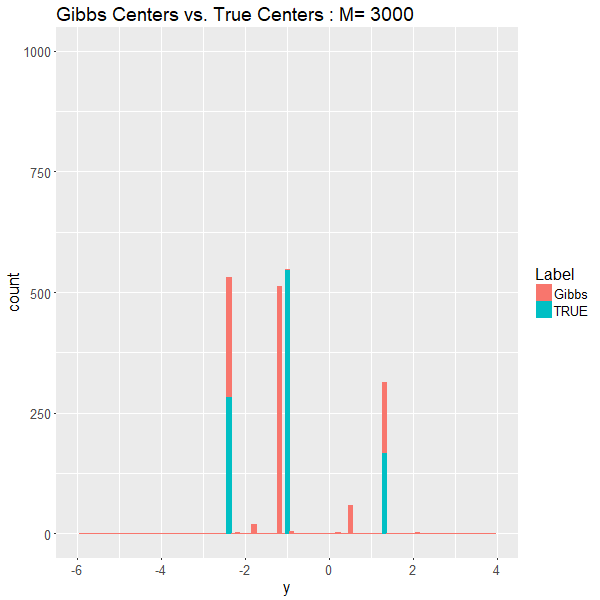
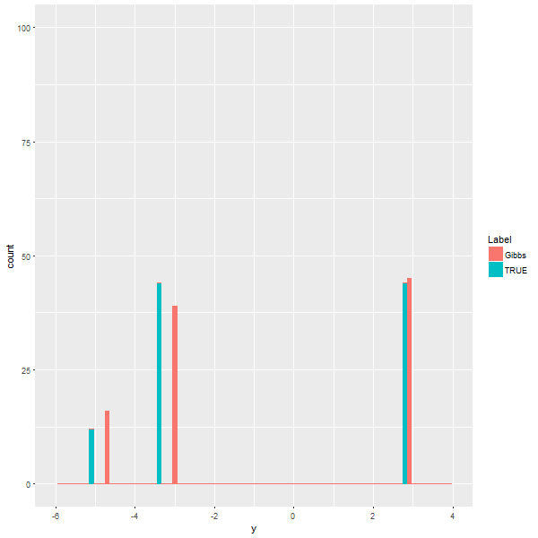
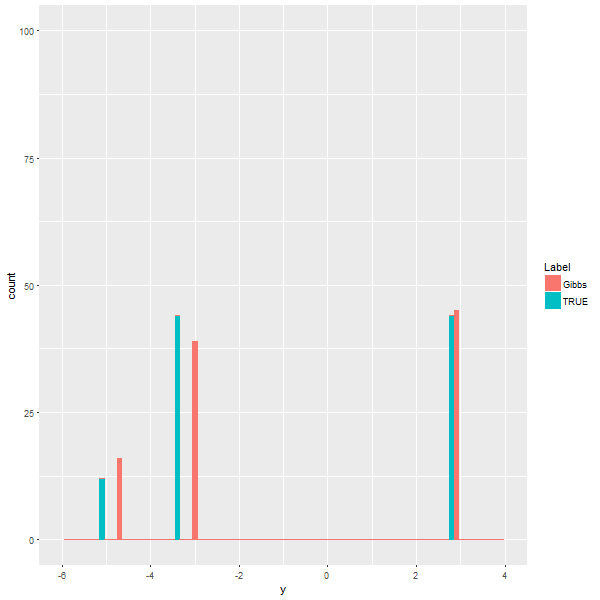

Dirichlet Process Mixture Models
Models and Inferences
Xiaorui Zhu (Joint work with Brittany Green)
Ph.D. students in Business Analytics
Storyline
- Motivation
- Dirichlet Process Mixture Models
- Gibbs Sampling Algorithm
- Simulation results
Motivation
Truth is complicated:

Motivation
Truth is complicated:

Motivation
Truth is complicated:
Motivation
Truth is complicated:

Dirichlet Process Mixture Model
\(DP\) is a random measure defined as: \[\mu = \sum^{\infty}_{i=1} p_i \delta_{\phi_i}, \] where:
- \((p_n)_{n\in N}\) are random weights by stick-breaking construction with parameter \(\theta\)
- and \(G_0\) is "the base measure"
Therefore, \(\mu \sim DP(\theta, G_0)\) has following repressentation:
\[\begin{array} {rl} \mu & = \; \displaystyle \sum^{\infty}_{i=1} \Big[ V_i \prod^{i-1}_{j=1}(1-V_j) \Big] \delta_{\phi_i} \\ V_i & \overset{iid}{\sim} \; Beta(1, \theta) \\ \phi_i & \overset{iid}{\sim} \; G_0 \end{array}\]
Animation of CRP

MCMC & Gibbs Sampler
Gibbs Sampler: also called alternating conditional sampling. Each iteration draws each subset conditional on the value of all the others \((X = (X_1, \cdots , X_d))\).
- Starts from an arbitrary state \(\mathbf{X}^{(0)}=\mathbf{x}^{(0)}\)
- Moves with transition probability density: \[\mathbf{K}_G(\bf{x, y})=\prod^d_{\ell=1}\pi(y_\ell|\mathbf{y}_{1 : \ell -1}, \mathbf{x}_{\ell+1 : d})\]
Sample next state \(\mathbf{X}^{(m)}\) from \(K_G(\mathbf{X}^{(m-1)}, \mathbf{y})\)
Sub-steps(\(\ell\)-th): Sample \(\mathbf{X}^{(m)}_\ell\) from \[\pi(x|\mathbf{X}^{(m)}_{1 : \ell -1}, \mathbf{X}^{(m-1)}_{\ell+1 : d})\]
DPMM & Gibbs Sampler Algorithm
Simple Mixture Model: \[\begin{array} {l} \mathbf{y}_i|\mathbf{\theta}_{i} \sim \mathcal{N}(\mathbf{\theta}_i, 1) \\ \theta_i \sim DP(\alpha, G_0) \\ G_0 \sim \mathcal{N}(0,2) \end{array}\]
In order to implement, explicit expression is
\[b_i=\frac{1}{\sum_{j\ne i}F(y_i, \theta_j) + \alpha \int F(y_i, \theta)G_0(\theta)}\]
DPMM & Gibbs Sampler Algorithm
Likelihood function: \(F(y_i|\theta_i) = \frac{1}{\sqrt{2\pi}}e^{-\frac{1}{2}(y_i - \theta_i)^2}\)
Posterior distribution \(H_i = p(\theta|y_i)= \frac{F(y_i|\theta)G_0(\theta)}{\int{F(y_i|\theta)G_0(\theta)}}= \frac{1}{\sqrt{2\pi}\sqrt{2/3}}e^{\frac{(\theta - \frac{2}{3}y_i)^2}{2 (2/3)}}\)
\(\int{F(y_i|\theta)G_0(\theta)} = \frac{1}{\sqrt{6\pi}}e^{\frac{1}{6}(y_i)^2}\)
or another simple way: \(\Big(= \frac{F(y_i|\theta)G_0(\theta)}{H_i(\theta|y_i)}\Big)\)
Conjugate Prior is important
If the posterior distributions \(p(\theta|y)\) are in the same family as the prior probability distribution \(p(\theta)\) , the prior and posterior are then called conjugate distributions, and the prior is called a conjugate prior for the likelihood function.
Model parameter \(\mathbf{\mu}\): mean of Normal with known variance \(\Sigma\).
Prior of \(\mathbf{\mu}\) is \(\mathcal{N}(\mathbf{\mu_0}, \Sigma_0)\)
By derivation, posterior distribution is :
\[\mathcal{N}\Bigg(\Bigg(\Sigma^{-1}_0+\Sigma^{-1} \Bigg)^{-1} \Bigg(\Sigma^{-1}_0\mathbf{\mu_0}+\Sigma^{-1}\mathbf{y}\Bigg),\Bigg(\Sigma^{-1}_0+\Sigma^{-1} \Bigg)^{-1}\Bigg)\]
DPMM & Gibbs Sampler Algorithm
\[\begin{array} {ll} \hline \textbf{Algorithm:} & \text{Gibbs Sampler for DPMM} \\ \hline 1.\mathbf{Input:} & \mathbf{y} \in \mathbb{R}^n,\; \\ & \theta^{(0)}_i \in (0,1), i=1,\cdots, n \\ & \text{or} \;\theta^{(0)}_i = 0, i=1,\cdots, n \\ 2. \mathbf{Repeat:} & (1) \; q^*_{i,j} = F(y_i, \theta^{(m)}_i) \\ & (2) \; r^*_{i} = \alpha \int F(y_i, \theta^{(m)}_i) d G_0(\theta^{(m)}_i) \\ & (3) \; b_{i} = 1/(\sum^n_{j=1} q^*_{i,j} + r^*_{i} ) \\ & (4) \; \text{Draw} \; \theta^{(m)}_{i}|\theta^{(m)}_{-i,y_i} \sim \sum_{j\ne i} b_i q^*_{i,j} \delta(\theta^{(m)}_j) + b_i r^*_i H_i \\ & (5) \; \text{Update} \; i=1, \cdots, n \\ 3. \mathbf{Deliver:} & \hat\theta = \theta^{(m)} \\ \hline \end{array}\]
Convergency of one Markov chains
Start from a state with all same values:

 

Convergency of one Markov chains
Start from a state with all different values:

 

Convergency of Algorithm
Average total number of clusters \((K_n)\) v.s iteration times \((M)\) of Gibbs Sampler
\((n=1000, M\in (1,2,7,20,54,148,403))\)

Convergency of Algorithm
Histogram of 100 replications for every given M:

- Total number of clusters approach the truth (15) when M increases
Inference of cluster center
Centers of clusters might be of interest to you.
 

Inference of cluster center
Animation of Centers of each cluster (100 simulation):

DPMM & Gibbs Sampler Algorithm
2D Simple Mixture Model: \[\begin{array} {rl} \bigg(\begin{array}{c}y_{i,1}\\ y_{i,2}\\ \end{array}\bigg)|\bigg(\begin{array}{c} \theta_{i,1}\\ \theta_{i,2}\\ \end{array}\bigg) & \sim \mathcal{N}\bigg(\bigg(\begin{array}{c} \theta_{i,1}\\ \theta_{i,2}\\ \end{array}\bigg), \bigg(\begin{array}{cc}\sigma^2 & \\ & \sigma^2\\ \end{array}\bigg)\bigg) \\ \bigg(\begin{array}{c}\theta_{i,1}\\ \theta_{i,2}\\ \end{array}\bigg) & \sim DP(\alpha, G_0) \\ G_0 & \sim \mathcal{N}\bigg(\bigg(\begin{array}{c}0\\ 0\\ \end{array}\bigg), \bigg(\begin{array}{cc}\sigma^2_0 & \\ & \sigma^2_0\\ \end{array}\bigg)\bigg) \end{array}\]
Likelihood function: \(F\bigg(\bigg(\begin{array}{c}y_{i,1}\\ y_{i,2}\\ \end{array}\bigg)|\bigg(\begin{array}{c} \theta_{i,1}\\ \theta_{i,2}\\ \end{array}\bigg)\bigg) = \frac{1}{\sqrt{2\pi}}e^{-\frac{1}{2}(\mathbf{y_{i\cdot}} - \theta_{i\cdot})^2}\)
Posterior distribution \(H_i \sim \mathcal{N}\bigg(\frac{\sigma^2_0}{\sigma^2_0+\sigma^2}\bigg(\begin{array}{c}y_{i,1}\\ y_{i,2}\\ \end{array}\bigg), \frac{\sigma^2_0\sigma^2}{\sigma^2_0+\sigma^2}\bigg(\begin{array}{cc}1 & \\ & 1\\ \end{array}\bigg)\bigg)\)
Gibbs Sampler results for 2D DPMM
Underlying clusters and estimated clusters from Gibbs Sample (Algorithm for this 2D DPMM)


Gibbs Sampler results for 2D DPMM
Underlying clusters and estimated clusters from Gibbs Sample

Gibbs Sampler results for 2D DPMM
Underlying clusters and estimated clusters from Gibbs Sample

Gibbs Sampler results for 2D DPMM
Underlying clusters and estimated clusters from Gibbs Sample
Gibbs Sampler results for 2D DPMM
Underlying clusters and estimated clusters from Gibbs Sample
Take Aways
- In 1D base measure setting, Algorithm converge very quick
- Starting from all same initialization performs better
- In 1D base measure, when \(M>50\), total number of cluster from Gibbs Sampler is acceptable, but it's not ture in 2D base measure